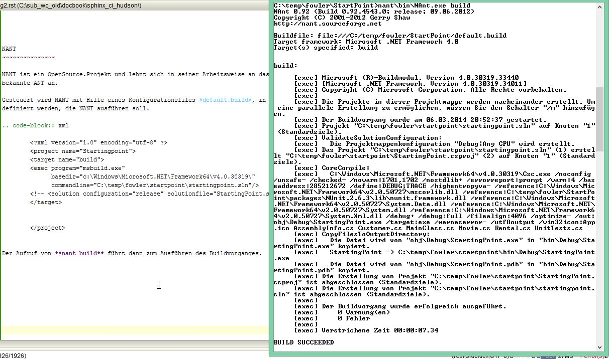

Runde 2¶
Automatische Builds¶
Bisher erfolgt ein neuer Build des Programms durch Drücken der Taste F5 innerhalb von VisualStudio auf dem Entwicklerrechner. Dies ist allerdings kein definiertes Vorgehen, da in Abhängigkeit von Betriebssystem, .NET-Plattform und Versionsständen von Fremd-Libraries unterschiedliche Rahmenbedingungen herrschen können.
Alle Aufgaben, die für einen erfolgreichen Buildvorgang vorzunehmen sind, sind am besten in Skripten zu zentralisieren. Für diese Aufgabe wurden bereits vor mehreren Jahrzehnten eigene Programme entwickelt. Wichtige Vertreter sind ANT, NANT, Maven, …. Microsoft verfügte lange Jahre über eine proprietäre Build-Engine, bis Sie sich vor vielen Jahen entschloss, mit Hilfe von MSBUILD einen von VisualStudio getrennten Build-Mechanismus zu entwickeln, der auch für Aufgaben außerhalb von VisualStudio verwendet werden kann.
In unserem Beispiel werden wir aufgrund vorhandener Kennnisstände das Tool NANT benutzen, auch wenn sich natürich für ein VisualStudio-Projekt msbuild besser eignen würde. Intern übergibt VisualStudio seine Build-Aufgaben an msbuild.
NANT¶
NANT ist ein OpenSource.Projekt und lehnt sich in seiner Arbeitsweise an das aus der Java-Welt bekannte ANT an.
Gesteuert wird NANT mit Hilfe eines Konfigurationsfiles default.build, in dem alle Aufgaben definiert werden, die NANT ausführen soll. Die Aufgaben (task) werden dabei mit Hilfe von targets organisiert.
<?xml version="1.0" encoding="utf-8" ?>
<project name="Startingpoint">
<target name="build">
<exec program="msbuild.exe"
basedir="c:\Windows\Microsoft.NET\Framework64\v4.0.30319\"
commandline="Pfad zur Solution\startingpoint.sln"/>
</target>
</project>
Der Aufruf von nant build führt dann zum Ausführen des Buildvorganges.
MSBUILD¶
Die Arbeit mit msbuild gestaltet sich noch einfacher. Der Buildprozess kann dadurch gestartet werden, dass man dem Konsolenprogramm msbuild.exe den Pfad zur Solution übergibt.
c:\Windows\Microsoft.NET\Framework64\v4.0.30319\msbuild.exe Pfad_zur_Solution.sln
NUnit-Integration¶
Grundsätzlich kann NUnit sowohl in NANT als auch in MSBUILD integriert werden. In unserem Beispiel werden wir die Integration mit Hilfe des NANT-Tools zeigen.
Eine Konfigurationsdatei von NANT kann verschiedene Tasks besitzen, die auch selbständig voneinander ausgerufen werden können.
<?xml version="1.0" encoding="utf-8" ?>
<project name="Startingpoint">
<target name="build">
<exec program="msbuild.exe"
basedir="c:\Windows\Microsoft.NET\Framework64\v4.0.30319\"
commandline="C:\temp\fowler\startpoint\startingpoint.sln"/>
</target>
<target name="test">
<exec program="c:\Program Files (x86)\NUnit 2.6.3\bin\nunit-console.exe"
commandline="C:\temp\fowler\startpoint\bin\Debug\StartingPoint.exe /xml=C:\temp\fowler\startpoint\bin\Debug\result_test.xml" />
</target>
</project>
Der Parameter /xml gibt den Dateinamen an, in der NUnit seine Ausgaben schreiben soll. Diese Datei wird von uns später noch ausgewertet werden. Der Aufruf des Test-Targets erfolgt dann wie folgt.
Microsoft Windows [Version 6.3.9600]
(c) 2013 Microsoft Corporation. Alle Rechte vorbehalten.
C:\temp\fowler\StartPoint>c:\temp\nant\bin\NAnt.exe test
NAnt 0.92 (Build 0.92.4543.0; release; 09.06.2012)
Copyright (C) 2001-2012 Gerry Shaw
http://nant.sourceforge.net
Buildfile: file:///C:/temp/fowler/StartPoint/default.build
Target framework: Microsoft .NET Framework 4.0
Target(s) specified: test
test:
[exec] NUnit-Console version 2.6.3.13283
[exec] Copyright (C) 2002-2012 Charlie Poole.
[exec] Copyright (C) 2002-2004 James W. Newkirk, Michael C. Two, Alexei A. Vorontsov.
[exec] Copyright (C) 2000-2002 Philip Craig.
[exec] All Rights Reserved.
[exec]
[exec] Runtime Environment -
[exec] OS Version: Microsoft Windows NT 6.2.9200.0
[exec] CLR Version: 2.0.50727.8000 ( Net 3.5 )
[exec]
[exec] ProcessModel: Default DomainUsage: Single
[exec] Execution Runtime: net-3.5
[exec] ...
[exec] Tests run: 3, Errors: 0, Failures: 0, Inconclusive: 0, Time: 0,21134 9783145239 seconds
[exec] Not run: 0, Invalid: 0, Ignored: 0, Skipped: 0
[exec]
BUILD SUCCEEDED
Total time: 3.2 seconds.
Metrics-Integration¶
Was soll das ?¶
Berechtigterweise muss man sich fragen, warum man all diesen Aufwand treibt, wenn man doch all diese Dinge auch über VisualStudio hätte erreichen können. Die Antwort liegt in Tatsache, dass man heutzutage als Entwickler kein Einzelkämpfer ist. Der Build und die darum liegenden Tätigkeiten müssen zentralisiert und automatisiert werden. Es ist Zeit für den CI Server.